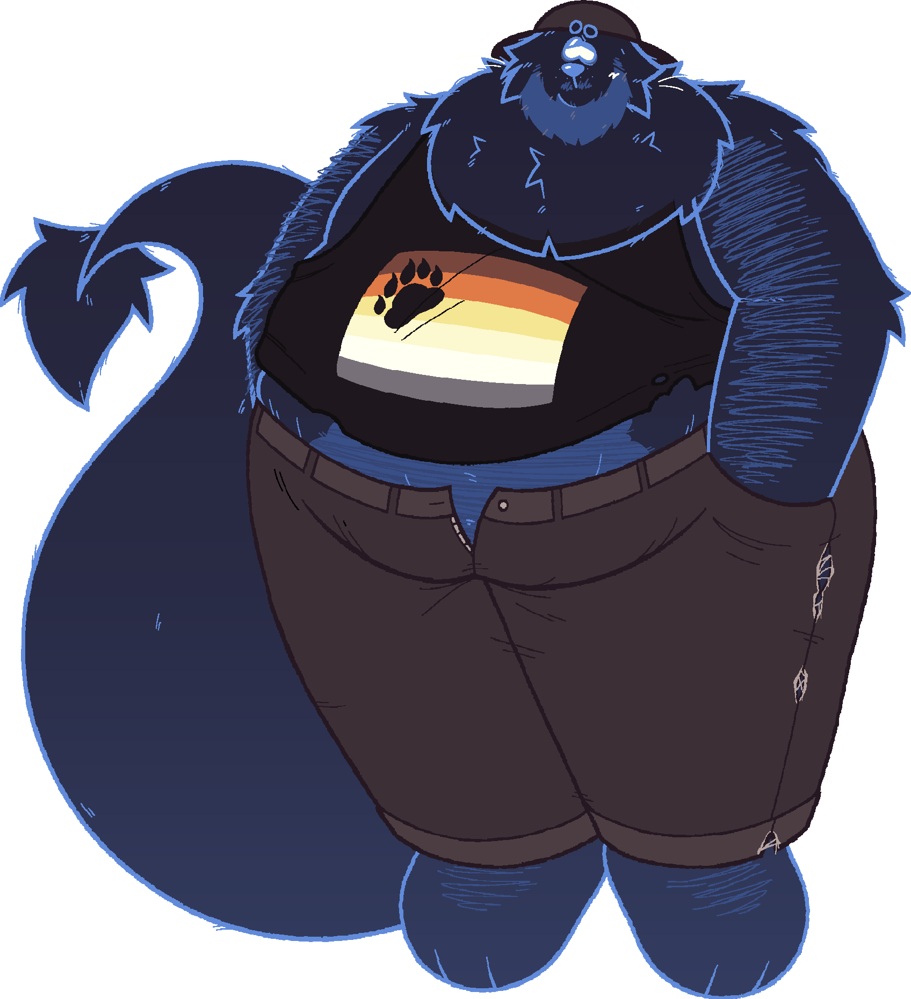

info
43 y/o (b. february 27), he/him


lion, 7'0"
description
lazy, warm, and kind, though he usually looks grumpy. he's not very expressive
he's very proudly queer and likes to show off his body
his fur glows and can change color